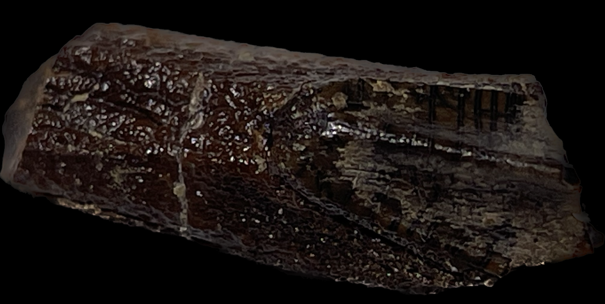
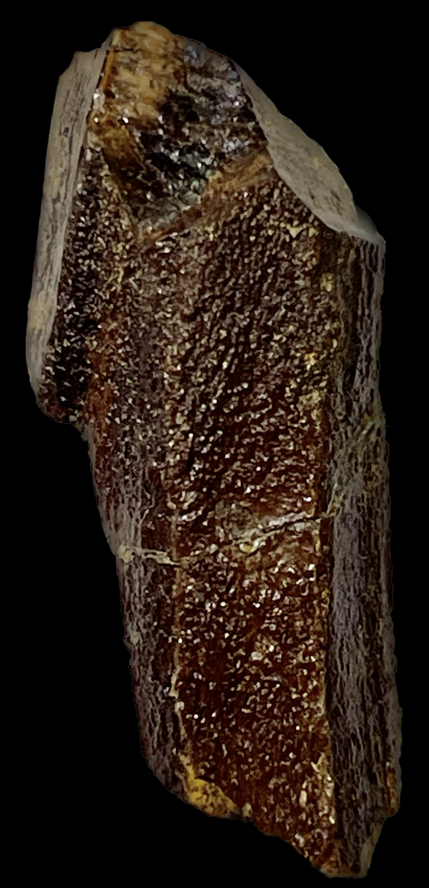
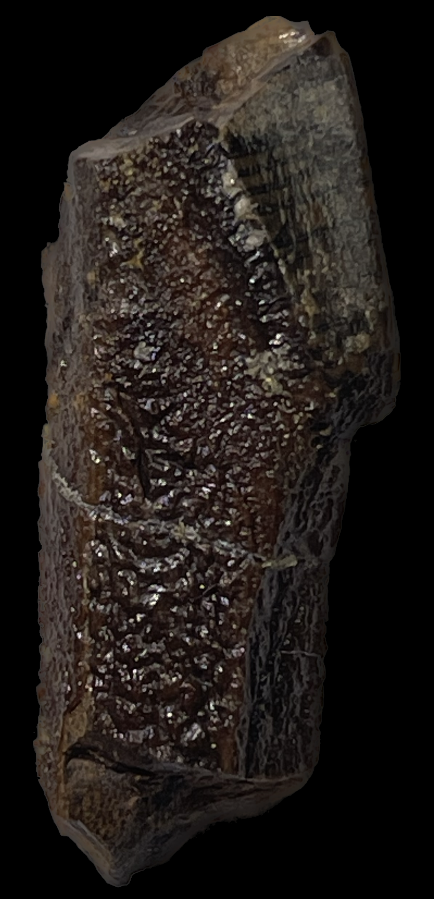
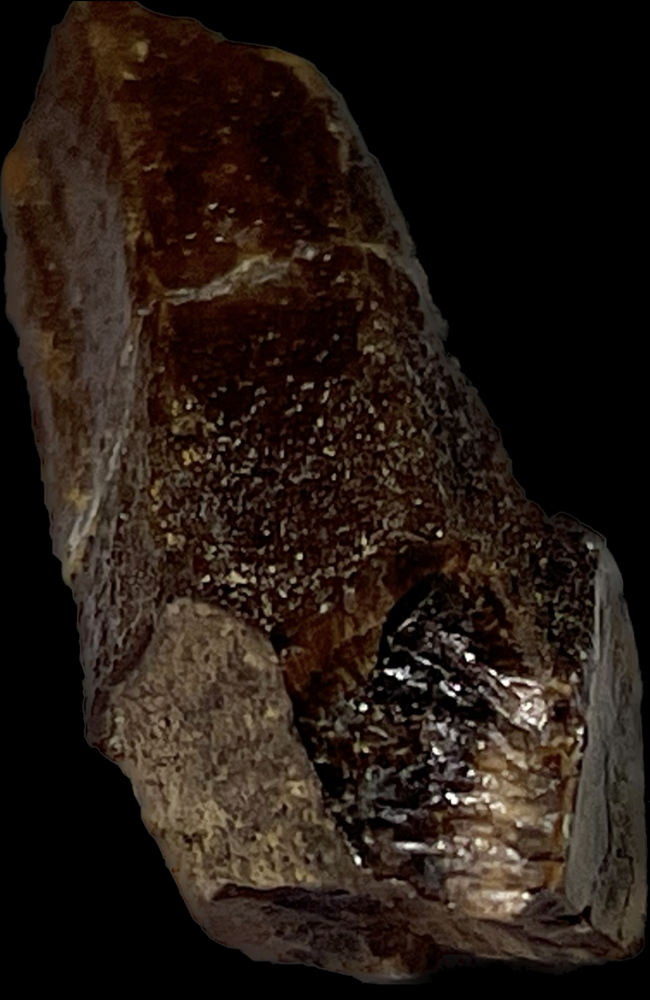
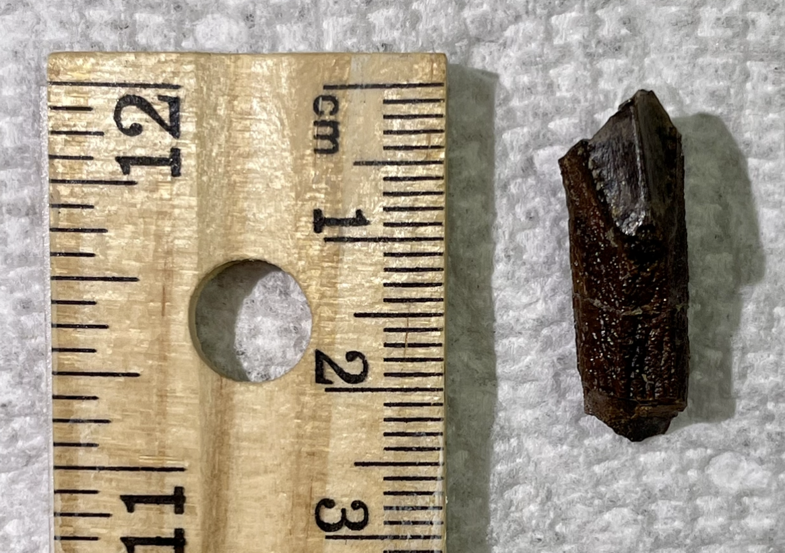
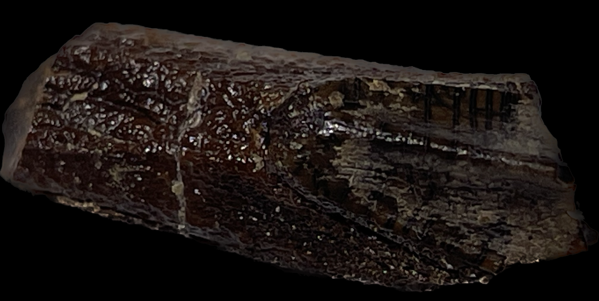
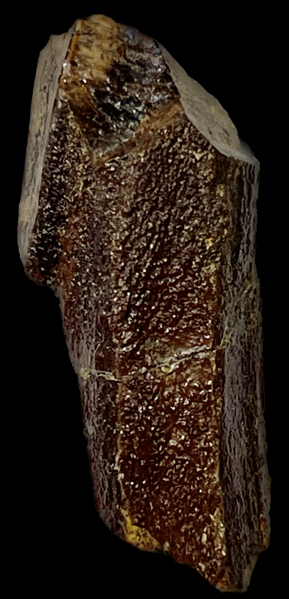
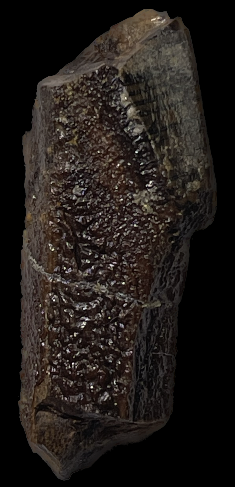
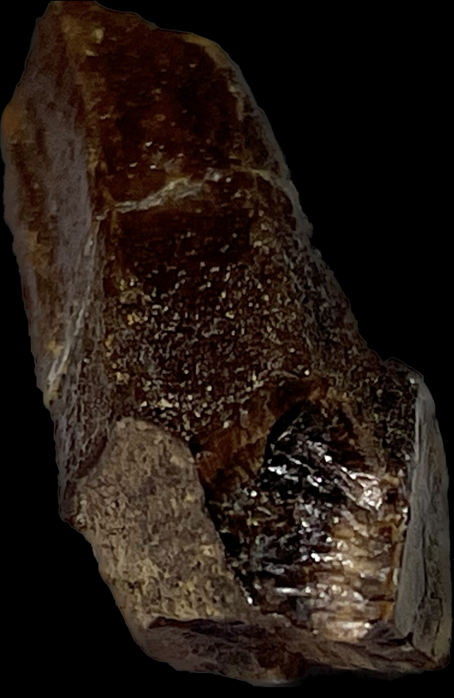
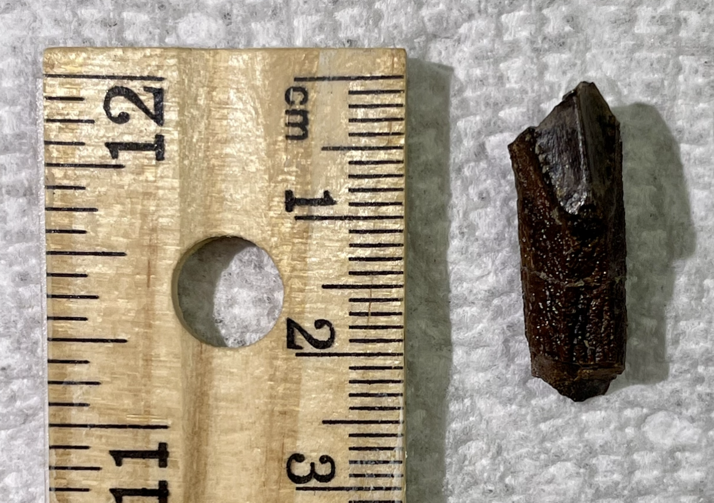

Dinosaur
Edmontosaurus regalis
Cretaceous
Horshoe Canyon Formation
Alberta-Drumheller, Canada
Size: 2.4 cm
PRICE: $100 $90
A very rare rooted tooth of the herbivorous ornithopod dinosaur Edmontosaurus regalis, from the Cretaceous of Canada. Not to be confused with the much more common Edmontosaurus annectens from the USA.
All-natural without restoration/reconstruction. It is a rooted tooth which are much rarer than common "spitters" that are shed throughout the animal's lifetime. A rooted tooth would only have fossilized after the animal's death. Natural, beautiful root and enamel preservation, with a rich reddish-brown coloration and sheen. Last but not least, it is from Alberta, Canada. Canada has very strict laws on collecting and exporting dinosaur fossils, and so you will not find any from there besides from old collections such as this one.
 
